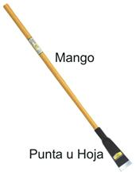

Herramientas de Excavación
La Escardilla
También conocida como Azada, es una herramienta que está formada por una cabeza con el borde frontal cortante relativamente afilado por un lado y un mango para sujetarla.
Las hay de varios tamaños y con variaciones ligeras en la forma de la hoja. Sus dimensiones varían según la aplicación y las regiones, siendo el tamaño corriente de 20 a 25 centímetros la plancha y de 60 a 80 el mango.
La Pala
Una pala es una herramienta de mano utilizada para excavar o mover materiales con cohesión relativamente pequeña.
Consta básicamente de una superficie plana con una ligera curvatura que sirve para cavar en la tierra y transportar el material y de un mango de metal o madera con el que se maneja.
La parte lisa suele ser metálica y el mango remata en un asidero que puede ser recto o curvo para poder ejercer mayor fuerza con una de las manos.

La Chícora o Barretón
La Chícora o Barretón consiste básicamente en una hoja o punta metálica plana y con cierto filo, unida a un mango de madera.
Esta es una herramienta de excavación, muy utilizada en la agricultura para abrir huecos más angostos y profundos de los que se pueden con una pala o pico.
Existe una variación que se usa en albañilería, y que es completamente de metal, y se le conoce como simplemente como Barra.
Normas para el uso del la Escardilla, la Pala y la Chícora o Barretón
- Empléala básicamente para cavar y remover tierras previamente roturadas o blandas, y para mover montones de arena o cemento.- Recuerda no forzar demasiado la espalda al laborar, para evitar dolores musculares, usa siempre con la fuerza de los brazos y el peso de la herramienta.
- Evita usarla como palanca por que se afloja la hoja o punta, o se rompe el mango. Tampoco la expongas al fuego u otros agentes que puedan afectar la madera del mango.
- Al pasarla a otro NO la arrojes, esté no es un juguete, y por su filo puede causar heridas muy profundas.
- Al moverte, colócala sobre tu hombro, con el filo mirando hacia abajo, NO la lleves balanceándose ya que puedes golpear a alguien con ella.
Mantenimiento de las herramientas para cavar como el Pico, la Escardilla, la Pala y la Chícora o Barretón
- Luego de usarlo límpialo cuidadosamente, y pon un poco de grasa en su parte metálica, para evitar el oxido.
- Afila los bordes planos usados para cavar, tendiendo en cuenta que se usan en la tierra, por lo que un filo muy fino ser perderá casi de inmediato.
- Sustituye el mango si está roto o astillado, y verifica que la cabeza siempre este firme, ósea bien acuñada.
- Guárdalos en un lugar adecuado, preferiblemente guindados en una pared, o dentro de un Cajón de Patrulla.